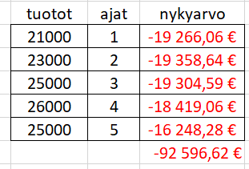
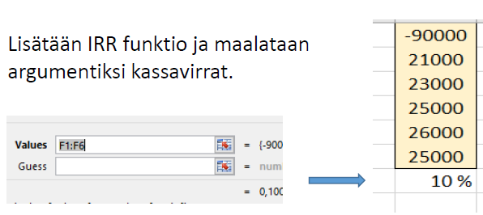

Talousmatematiikan perusteita
Contents
Talousmatematiikan perusteita¶
Koronkorkolaskut¶
Korkolaskuissa käytettävät symbolit¶
k = nykyarvo (investoitu summa, alkupääoma)
K = tuleva arvo (karttunut pääoma)
i = korkokanta (laskuissa desimaalimuodossa: esim. 5% = 0.05)
t = aika, korkojaksojen lukumäärä
Em. lisäksi kaavoissa käytetään usein symbolia r, jonka laskukaava on r = 1 + i.
Sitä nimitetään lisäyskertoimeksi tai korkotekijäksi.
Tulevan arvon laskeminen koronkorkomenetelmällä¶
Koronkorkomenetelmässä kunkin korkojakson lopussa pääomaan liitetään korko.
Seuraavan korkojakson aikana korkoa kertyy alkuperäisen pääoman ja siihen liitetyn koron yhteissummalle.
Tulevan arvon laskeminen
Tuleva arvo \(K = k\cdot (1+i)^t\)
k = nykyarvo, i = korkokanta, t = aika (korkojaksojen lukumäärä)
Esim. Irina tallentaa pankin säästötilille 5000 Euroa 5 vuodeksi. Korkoprosentti on 2.5% p.a (per annum = vuodessa). Laske säästötilin saldo 5 vuoden kuluttua Euron tarkkuudella
Tehtävässä annettua korkoa vastaava korkotekijä r = 1 + i = 1.025.
Loppusaldo \(K = k\cdot (1+i)^t = 5000\cdot 1.025^5 = 5657\)
Nykyarvon laskeminen (diskonttaus)¶
Kun halutaan tietää esim. jonkin tulevan tuoton arvo nykyhetkellä, tarvitaan nykyarvon laskemista eli diskonttausta
Nykyarvon laskukaava
Nykyarvo \(k = \frac{K}{(1+i)^t}\hspace{1cm}\) joka voidaan esittää myös muodossa
\(k = K {(1+i)}^{-t} \)
K = tuleva arvo, i = korkokanta, t = aika (korkojaksojen lukumäärä)
Paavo sijoittaa 20000 € kohteeseen, josta arvioi saavansa 24000 € myydessään sen 5 v kuluttua. Paavo tavoittelee 4.0% prosentin voittoa investoinnille. Toteutuuko tavoite?
Lasketaan myyntihinnan nykyarvo 4 % korkokannalla. \(k = K {(1+i)}^{-t} = 24000\hspace{1mm} {1.04}^{-5} = 19726\)
Myyntihinnan nykyarvo on pienempi kuin investoitu summa 20000, joten Paavon tavoite ei toteudu.
Korkokannan i ratkaiseminen koronkorkokaavasta¶
Korkokannan laskeminen
Korkokanta \(i = \sqrt[t]{\frac{K}{k}}-1\)
K = tuleva arvo, k=nykyarvo, t = aika (korkojaksojen lukumäärä)
Kaavan perustelu:
\(K = k {(1+i)}^{t} \Rightarrow \frac{K}{k} = (1+i)^t \Rightarrow 1+i=\sqrt[t]{\frac{K}{k}}\Rightarrow i = \sqrt[t]{\frac{K}{k}}-1 \)
Paavo sijoittaa 20000 € kohteeseen, josta arvioi saavansa 24000 € myydessään sen 5 v kuluttua. Paavo tavoittelee 4.0% prosentin voittoa investoinnille. Toteutuuko tavoite? Laske Paavon saama todellinen korko?
Lasketaan Paavon saama todellinen korko. \(i = \sqrt[t]{\frac{K}{k}}-1 =\sqrt[t]{\frac{24000}{25000}}-1 = 0.037=3.7\%\)
Todellinen korko jää alle Paavon tavoitteen.
Ajan ratkaiseminen koronkorkokaavasta¶
Jos halutaan laskea, missä ajassa alkupääoma k karttuu arvoon K korkokannalla i, pitää ratkaista koronkorkokaava ajan t suhteen
Ajan laskeminen
Aika (=korkojaksojen määrä) \(t = \frac {log(\frac{K}{k})}{log(1+i)}\)
K = tuleva arvo, k=nykyarvo, t = aika (korkojaksojen lukumäärä)
Kaavan perustelu:
\(K = k {(1+i)}^{t} \Rightarrow \frac{K}{k} = (1+i)^t \Rightarrow log(\frac{K}{k})= log((1+i)^t)= t\hspace{1mm} log(1+i)\Rightarrow t = \frac {ln(\frac{K}{k})}{ln(1+i)} \)
Annen auton arvo on nyt 5000 €. Monenko vuoden kuluttua arvo on enää 1000 € olettaen, että ko. automallin arvo putoaa 15% vuodessa?
Korko on tässä tapauksessa negatiivinen luku -0.015, joten korkotekijä 1 + i = 0.85
\(t = \frac {log(\frac{K}{k})}{log(1+i)} = \frac {log(\frac{1000}{5000})}{log(0.85)} = 9.9 \)
Vastaus: 9.9 vuoden kuluttua.
Annuiteettilaina eli tasaerälaina¶
Nykyisin yleisin lainamuoto asunto- ja kulutusluotoissa on tasaerälaina, jossa laina maksetaan takaisin koko laina-ajan samansuuruisina pysyvinä suorituksina, jotka sisältävät sekä lyhennyksen että koron.
Alla on kaava maksuerän suuruuden laskemiseen. Kaava voidaan johtaa käyttämällä geometrisen sarjan summan kaavaa, joka löytyy kaavakirjoista.
Tasaerälainan maksuerän laskukaava
\(p=\frac{k\hspace{1mm}i}{1-(1+i)^{-n}}\)
k = lainamäärä, i = korkojakson korkoprosentti, n = erien määrä
Huom! Kaavaa vastaava Excel funktio on MAKSU (engl. Excelissä PMT)
Esim. Maija ostaa tietokoneen luotolla, jonka maksuaika on 18 kk. Luottosumma on 800 Euroa, korko 6% vuodessa eli 0.5% kk:ssa. Mikä on kuukausierän suuruus?
Periaate: Maksuerien nykyarvojen summan on oltava yhtäsuuri kuin ostohinta.
Kuukausierä p on yhtälön \(800 = \frac {p}{1.005}+ \frac {p}{1.005^2} + ... + \frac {p}{1.005^18}\) ratkaisu.
Yhtälö on liian pitkä laskimella ratkaistavaksi. Käytetään tasaerän laskukaavaa
\(p=\frac{k\hspace{1mm}i}{1-(1+i)^{-n}}\), missä k = lainattu summa, i = lyhennyskauden korko,
n = lyhennysten lukumäärä
Sijoitusten jälkeen saadaan tasaeräksi \(p= \frac{800\hspace{1mm}\cdot \hspace{1mm}0.005}{1-1.005^{-18}} = 46.59 \)
Excel-ratkaisu: \(\color{blue}{\text{=MAKSU(0,5%;18;800)}}\)
Tasaerälaina, jossa viimeiseen erään on lisätty lainan jäännösarvo
\(p=\frac{k\hspace{1mm}i-K\hspace{1mm}i (1+i)^{-n}}{1-(1+i)^{-n}}\)
k = lainamäärä, i = korkojakson korkoprosentti, n = erien määrä, K = jäännösarvo
Huom! Kaavaa vastaava Excel funktio on MAKSU (engl. Excelissä PMT)
Esim. Eero ostaa vaihtoauton osamaksulla, jonka maksuaika on 36 kk. Luottosumma on 6000 euroa, korko 6% vuodessa eli 0.5% kk:ssa. Mikä on kuukausierän suuruus, kun viimeiseen erään on lisätty jäännösarvo 2000 euroa?
Periaate: Maksuerien nykyarvojen summan on oltava yhtäsuuri kuin ostohinta.
Käytetään laskukaavaa
\(p=\frac{k\hspace{1mm}i-K\hspace{1mm}i (1+i)^{-n}}{1-(1+i)^{-n}}\), missä k = lainattu summa, i = lyhennyskauden korko,
n = lyhennysten lukumäärä (laina-aika) ja K on viimeiseen erään lisätty ns. jäännösarvo
Sijoitusten jälkeen saadaan tasaeräksi \(p=\frac{6000\hspace{1mm}0.05-2000\hspace{1mm}0.005\cdot 1.005^{-36}}{1-1.005^{-36}} = 131.69 \)
Excel-ratkaisu: \(\color{blue}{\text{=MAKSU(0,5%;36;5000,-2000)}}\)
Kannattavuuslaskennan menetelmiä¶
1. Nykyarvomenetelmä¶
Investoinnin kannattavuuden laskeminen nykyarvomenetelmällä
\(1.\) Lasketaan arvioidujen vuosituottojen \(R_1, R_2, ..., R_n\) nykyarvojen summa \(K_{NA}\) kaavalla
Nykyarvo \(K_{NA} = \frac {R_1}{1+i}+\frac {R_2}{(1+i)^2} + .... + \frac {R_n}{(1+i)^n}\)
\(2.\) Verrataan tulosta investoituun summaan. Jos nykyarvojen summa ylittää investoidun summan, investointi on kannattava.
Menetelmää sovellettaessa tulos riippuu nykyarvojen laskennassa käytettävän korkokannan i valinnasta.
Korkokanta voidaan käyttää kahta vaihtoehtoista periaatetta:
A. Kustannusperusteinen korkokanta, joka on käypä rahoituskorko, johon on lisätty riski
B. Tuottoperusteinen korkokanta, joka sisältää edellisen lisäksi yrityksen itselleen asettaman korkotuottotavoitteen
Yritys harkitsee investointia 90000 hintaiseen työkoneeseen, jonka käyttöikä on 5 vuotta. Se arvioi saavansa investoinnista vuosituotot 21000, 23000, 25000, 26000 ja 25000. Täyttääkö hanke kannattavuuskriteerin, kun kannattavuuslaskelma tehdään käyttämällä 9.0% korkokantaa, joka sisältää kustannusten lisäksi tuottotavoitteen?
Tapa1: Lasketaan tuottojen nykyarvo laskimella
korkokannalla
\(K_{NA} = \frac {21000}{1.09}+\frac {23000}{1.09^2} +\frac {25000}{1.09^3}+\frac {26000}{1.09^4} + \frac {25000}{1.09^5} = 92597\)
Vastaus: Tuottojen nykyarvo ylittää investoinnin arvon, joten investointi on kannattava.
Tapa2: Lasketaan tuottojen nykyarvo Excelin funktiolla NA (engl. PV)

NA funktion ohje: Esim. rivin 1 tulos -19266,06 saadaan kaavalla =NA(9%;B2;;A2), missä B2 viittaa aikasarakkeen lukuun 1 ja A2 viittaa tuottoon 21000. Argumentti 9% on korko. Käyttämällä soluviittauksia kaavan voi kopioida alaspäin. Excelissä nykyarvoilla ja tulevilla arvoilla on aina eri etumerkki. Tästä syystä nykyarvot ovat negatiivisia lukuja.
2. Sisäisen koron menetelmä¶
Sisäisen koron menetelmä (“Internal Rate of Return” eli IRR) vastaa nykyarvomenetelmää tarkemmin kysymykseen, mikä on investoinnin tuottoprosentti olettaen, että arvioivut vuosituotot toteutuvat.
Investoinnin sisäinen korko
\(1.\) Arvioiden vuosituottojen \(R_1, R_2, ..., R_n\) nykyarvojen summa \(K_{NA}\) on täsmälleen yhtä suuri kuin investoidu summa k jollakin korkokannalla i. Menetelmässä pyritään ratkaisemaan tämä korkokanta, jota voidaan pitää investoinnin todellisena tuottonkorkona. Tehtävä voidaan muotoilla seuraavasti:
solve \(k = \frac {R_1}{1+i}+\frac {R_2}{(1+i)^2} + .... + \frac {R_n}{(1+i)^n}\) for i
Koron i ratkaiseminen yhtälöstä palautuu n:nen asteen polyomiyhtälön ratkaisuun, mikä onnistuu vain hyvillä algebralaskimilla, kuten WolframAlpha online -laskimella. Toisaalta Excel:ssä on monipuolinen valikoima talousfunktioita, joista funktio IRR on juuri sisäisen koron laskentaan laadittu funktio.
Yritys harkitsee investointia 90000 hintaiseen työkoneeseen, jonka käyttöikä on 5 vuotta. Se arvio saavansa investoinnista vuosituotot 21000, 23000, 25000, 26000 ja 25000. Mikä on investoinnin tuottokorko näillä tiedoilla?
Tapa1: Ratkaisu WolframAlpha -laskimella
Lasketaan tuottokorko WolframAlpha -laskimella seuraavasti :
\(\color{red}{\text{solve }90000 = \frac {21000}{1+i}+\frac {23000}{(1+i)^2} +\frac {25000}{(1+i)^3}+\frac {26000}{(1+i)^4} + \frac {25000}{(1+i)^5}\text{ for i }}\)
Laskimen vastaus on 0.101
Vastaus: Investointi antaa 10.1% bruttotuoton
Tapa2: Ratkaisu Excelin IRR funktiota käyttäen
Merkitään alekkain ”kassavirta”: Investointi negatiivisena, sen alle vuosituotot positiivisena.
Lasketaan sisäinen korko Excel funktiolla IRR ao. ohjeen mukaisesti:

Vastaus: Investointi antaa 10% bruttotuoton
(Lisää desimaaleja saa näkyviin muuttamalla solun muotomäärityksiä)
3. Annuiteettimenetelmä¶
Menetelmällä voidaan määrittää, kuinka suuri pitäisi olla investoinnista saatava vuosituotto, jotta se kattaisi investointikustannukset.
Yritys harkitsee investointia 90000 hintaiseen työkoneeseen, jonka käyttöikä on 5 vuotta. Laske investoinnin vuotuiset pääomakulut käyttäen 4.5% korkokantaa. (Ollakseen kannattava vuosituottojen on oltava vähintään pääomakulujen suuruiset.)
Vuotuisten pääomamenojen annuiteetti \(p=\frac{k\hspace{1mm}i}{1-(1+i)^{-n}} = \frac{90000\hspace{1mm}0.045}{1-1.045^{-5}} = n. 20500 \)
Vastaus: Vuosituottojen on oltava vähintään 20500, jotta investointi kattaisi pääomamenot. (Ollakseen kannattava, investoinnin tulisi tuottaa lisäksi voittoa, joten 20500 ei ole riittävä tuotto).